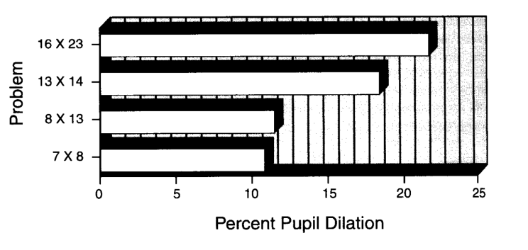
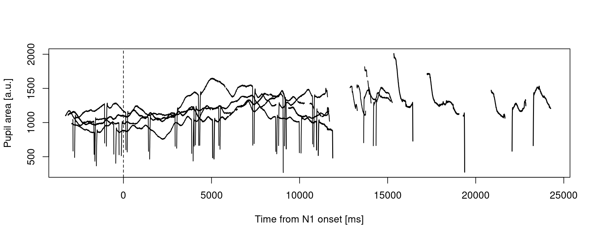
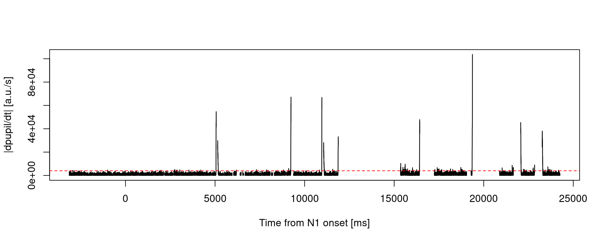
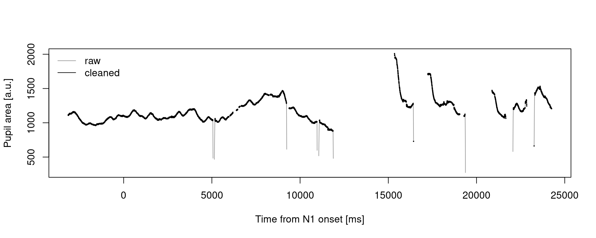
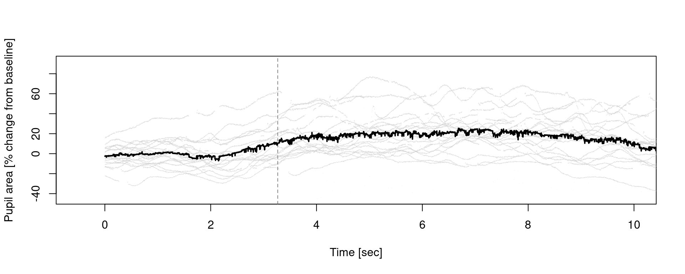
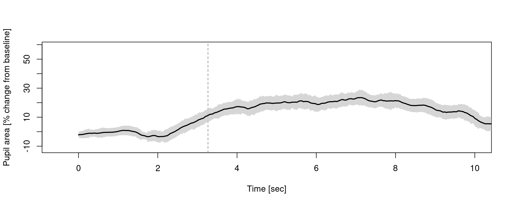
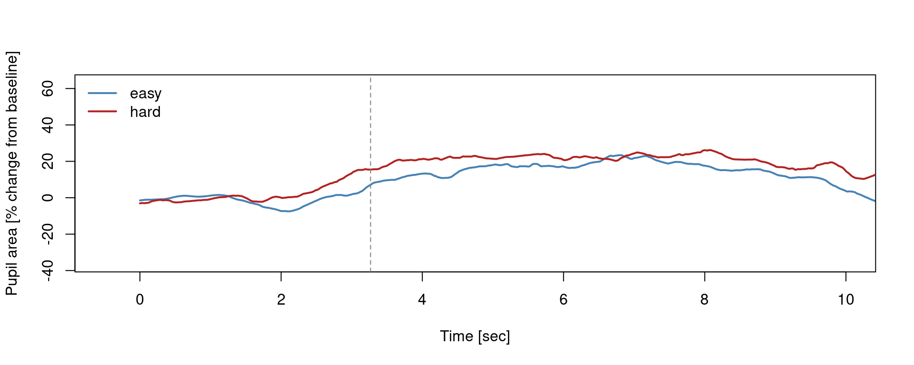

Code
rm(list = ls())
library(eyelinker)
source("eyelink_source.R")PS5210 25-26
This worksheet translates the Matlab pupil-analysis workflow into R for the mental arithmetic task.
rm(list = ls())
library(eyelinker)
source("eyelink_source.R")Participants hear two numbers and mentally multiply them. Pupil size increases with cognitive load, so we compare pupil traces across trials and difficulty.

edf <- "./data/S2301.edf"
# Convert EDF to ASC (overwrite existing ASC if present)
system2("edf2asc", args = c("-y", edf))
asc <- sub("\\.[Ee][Dd][Ff]$", ".asc", edf)
dat <- read.asc(asc, parse_all = TRUE)
str(dat)List of 8
$ raw : spc_tbl_ [426,761 × 6] (S3: spec_tbl_df/tbl_df/tbl/data.frame)
..$ block : num [1:426761] 1 1 1 1 1 1 1 1 1 1 ...
..$ time : int [1:426761] 1094994 1094995 1094996 1094997 1094998 1094999 1095000 1095001 1095002 1095003 ...
..$ xp : num [1:426761] 728 728 728 728 728 728 728 728 728 729 ...
..$ yp : num [1:426761] 504 505 506 506 506 ...
..$ ps : num [1:426761] 1024 1023 1023 1023 1020 ...
..$ cr.info: chr [1:426761] "..." "..." "..." "..." ...
..- attr(*, "spec")=
.. .. cols(
.. .. time = col_integer(),
.. .. xp = col_double(),
.. .. yp = col_double(),
.. .. ps = col_double(),
.. .. cr.info = col_character()
.. .. )
..- attr(*, "problems")=<externalptr>
$ sacc : tibble [970 × 11] (S3: tbl_df/tbl/data.frame)
..$ block: num [1:970] 1 1 1 1 1 2 2 2 3 3 ...
..$ stime: num [1:970] 1095094 1095447 1095642 1096136 1097182 ...
..$ etime: num [1:970] 1095155 1095504 1095660 1096280 1097195 ...
..$ dur : num [1:970] 62 58 19 145 14 160 18 219 69 189 ...
..$ sxp : num [1:970] 729 281 779 805 806 ...
..$ syp : num [1:970] 507 592 566 615 606 ...
..$ exp : num [1:970] 292 772 812 813 805 ...
..$ eyp : num [1:970] 577 552 601 599 583 ...
..$ ampl : num [1:970] 10.89 12.1 1.24 0.47 0.59 ...
..$ pv : num [1:970] 369 506 108 757 52 802 81 617 548 586 ...
..$ eye : Factor w/ 2 levels "L","R": 2 2 2 2 2 2 2 2 2 2 ...
$ fix : tibble [987 × 8] (S3: tbl_df/tbl/data.frame)
..$ block: num [1:987] 1 1 1 1 1 1 2 2 2 2 ...
..$ stime: num [1:987] 1095000 1095156 1095505 1095661 1096281 ...
..$ etime: num [1:987] 1095093 1095446 1095641 1096135 1097181 ...
..$ dur : num [1:987] 94 291 137 475 901 75 616 182 282 791 ...
..$ axp : num [1:987] 729 279 780 809 809 ...
..$ ayp : num [1:987] 509 588 561 605 602 ...
..$ aps : num [1:987] 1019 998 985 1040 1046 ...
..$ eye : Factor w/ 2 levels "L","R": 2 2 2 2 2 2 2 2 2 2 ...
$ blinks: tibble [510 × 5] (S3: tbl_df/tbl/data.frame)
..$ block: num [1:510] 1 2 2 3 3 3 3 3 3 3 ...
..$ stime: num [1:510] 1096160 1102106 1102726 1153349 1153993 ...
..$ etime: num [1:510] 1096222 1102167 1102850 1153452 1154099 ...
..$ dur : num [1:510] 63 62 125 104 107 1 9 2 2 41 ...
..$ eye : Factor w/ 2 levels "L","R": 2 2 2 2 2 2 2 2 2 2 ...
$ msg : tibble [468 × 3] (S3: tbl_df/tbl/data.frame)
..$ block: num [1:468] 0.5 0.5 0.5 0.5 0.5 0.5 0.5 0.5 0.5 0.5 ...
..$ time : num [1:468] 1050097 1050097 1050097 1067319 1067319 ...
..$ text : chr [1:468] "BEGIN OF DESCRIPTIONS" "Subject code: S2301" "END OF DESCRIPTIONS" "!CAL " ...
$ input : tibble [50 × 3] (S3: tbl_df/tbl/data.frame)
..$ block: num [1:50] 0.5 0.5 1 1.5 2 2.5 2.5 2.5 3 3.5 ...
..$ time : num [1:50] 1056715 1094846 1094994 1101420 1101442 ...
..$ value: int [1:50] 127 127 127 127 127 127 127 127 127 127 ...
$ button: tibble [0 × 4] (S3: tbl_df/tbl/data.frame)
..$ block : int(0)
..$ time : num(0)
..$ button: int(0)
..$ state : int(0)
$ info :'data.frame': 1 obs. of 20 variables:
..$ date : POSIXct[1:1], format: "2009-01-01 00:41:07"
..$ model : chr "EyeLink 1000"
..$ version : chr "4.594"
..$ sample.rate : num 1000
..$ cr : logi TRUE
..$ left : logi FALSE
..$ right : logi TRUE
..$ mono : logi TRUE
..$ screen.x : num 1920
..$ screen.y : num 1080
..$ mount : chr "Desktop / Monocular / Head Stabilized"
..$ filter.level: num 1
..$ sample.dtype: chr "GAZE"
..$ event.dtype : chr "GAZE"
..$ pupil.dtype : chr "AREA"
..$ velocity : logi FALSE
..$ resolution : logi FALSE
..$ htarg : logi FALSE
..$ input : logi FALSE
..$ buttons : logi FALSEInspect the key message types:
head(dat$msg$text, 20) [1] "BEGIN OF DESCRIPTIONS"
[2] "Subject code: S2301"
[3] "END OF DESCRIPTIONS"
[4] "!CAL "
[5] "!CAL Calibration points: "
[6] "!CAL -18.4, -40.1 0, 96 "
[7] "!CAL -18.8, -56.7 0, -2852 "
[8] "!CAL -17.8, -25.0 0, 2982 "
[9] "!CAL -50.1, -39.8 -5183, 96 "
[10] "!CAL 14.3, -39.4 5183, 96 "
[11] "!CAL -38.6, -50.5 -3130, -1665 "
[12] "!CAL 2.4, -50.5 3130, -1665 "
[13] "!CAL -36.7, -30.5 -3090, 1835 "
[14] "!CAL 1.5, -30.8 3090, 1835 "
[15] "!CAL eye check box: (L,R,T,B)"
[16] "!CAL href cal range: (L,R,T,B)"
[17] "!CAL Cal coeff:(X=a+bx+cy+dxx+eyy,Y=f+gx+goaly+ixx+jyy)"
[18] "!CAL Prenormalize: offx, offy = -18.419 -40.116"
[19] "!CAL Quadrant center: centx, centy = "
[20] "!CAL Corner correction:" table(grepl("^TRIAL_START", dat$msg$text))
FALSE TRUE
447 21 table(grepl("^EVENT_FixationDot$", dat$msg$text))
FALSE TRUE
447 21 table(grepl("^EVENT_N1$", dat$msg$text))
FALSE TRUE
447 21 table(grepl("^EVENT_N2$", dat$msg$text))
FALSE TRUE
447 21 table(grepl("^TRIAL_END", dat$msg$text))
FALSE TRUE
448 20 head(dat$msg$text[grepl("^TrialData", dat$msg$text)], 6)[1] "TrialData 1\tS2301\t0\t6\t14\t20\t0\t\t162340.11\t\t"
[2] "TrialData 1\tS2301\t0\t6\t14\t20\t0\t\t162340.11\t\t"
[3] "TrialData 2\tS2301\t0\t8\t13\t85\t0\t\t162369.20\t\t"
[4] "TrialData 2\tS2301\t0\t8\t13\t85\t0\t\t162369.20\t\t"
[5] "TrialData 3\tS2301\t0\t9\t13\t117\t1\t\t162389.31\t\t"
[6] "TrialData 3\tS2301\t0\t9\t13\t117\t1\t\t162389.31\t\t"ds2.trial)We rebuild the trial-wise structure used in Matlab. Each trial will include:
t_start, t_fix, t_N1, t_N2, t_resp, t_end)N1, N2, response, accuracy, is_hard)timestamp, eye_x, eye_y, pupil_size)msg <- dat$msg[order(dat$msg$time), , drop = FALSE]
raw <- dat$raw[order(dat$raw$time), , drop = FALSE]
# Parse TrialData rows once per trial
# TrialData format:
# TrialData <trial_n> <subject> <is_hard> <N1> <N2> <response> <accuracy> ...
trialdata_map <- list()
for (i in seq_len(nrow(msg))) {
text_i <- msg$text[i]
if (is.na(text_i) || !grepl("^TrialData", text_i)) next
tok <- strsplit(trimws(text_i), "\\s+")[[1]]
if (length(tok) < 8) next
tr_n <- suppressWarnings(as.integer(tok[2]))
if (is.na(tr_n)) next
key <- as.character(tr_n)
if (is.null(trialdata_map[[key]])) {
trialdata_map[[key]] <- list(
trial_n = tr_n,
subject = tok[3],
is_hard = suppressWarnings(as.integer(tok[4])),
N1 = suppressWarnings(as.integer(tok[5])),
N2 = suppressWarnings(as.integer(tok[6])),
response = suppressWarnings(as.integer(tok[7])),
accuracy = suppressWarnings(as.integer(tok[8]))
)
}
}
trials <- list()
trial_count <- 0L
trial_n <- NA_integer_
t_start <- NA_integer_
t_end <- NA_integer_
t_fix <- NA_integer_
t_N1 <- NA_integer_
t_N2 <- NA_integer_
for (i in seq_len(nrow(msg))) {
text_i <- msg$text[i]
if (is.na(text_i) || text_i == "") next
sa <- strsplit(trimws(text_i), "\\s+")[[1]]
if (length(sa) == 0) next
if (sa[1] == "TRIAL_START" && length(sa) >= 2) {
trial_n <- suppressWarnings(as.integer(sa[2]))
t_start <- as.integer(msg$time[i])
}
if (sa[1] == "EVENT_FixationDot") {
t_fix <- as.integer(msg$time[i])
}
if (sa[1] == "EVENT_N1") {
t_N1 <- as.integer(msg$time[i])
}
if (sa[1] == "EVENT_N2") {
t_N2 <- as.integer(msg$time[i])
}
if (sa[1] == "TRIAL_END" && length(sa) >= 2) {
t_end <- as.integer(msg$time[i])
}
ready <- !is.na(trial_n) && !is.na(t_start) && !is.na(t_fix) && !is.na(t_N1) && !is.na(t_N2) && !is.na(t_end)
if (ready) {
trial_count <- trial_count + 1L
idx_start <- closest_index(t_start, raw$time)
idx_end <- closest_index(t_end - 1L, raw$time)
if (idx_end < idx_start) {
tmp <- idx_start
idx_start <- idx_end
idx_end <- tmp
}
idx <- seq.int(idx_start, idx_end)
timestamp <- as.integer(raw$time[idx] - t_N1)
eye_x <- as.numeric(raw$xp[idx])
eye_y <- as.numeric(raw$yp[idx])
pupil_size <- as.numeric(raw$ps[idx])
# Eyelink missing code and impossible pupil values -> NA
miss <- (eye_x == 100000000) | (eye_y == 100000000)
eye_x[miss] <- NA_real_
eye_y[miss] <- NA_real_
pupil_size[miss] <- NA_real_
pupil_size[pupil_size <= 0] <- NA_real_
td <- trialdata_map[[as.character(trial_n)]]
trials[[trial_count]] <- list(
trial_n = trial_n,
t_start = t_start,
t_end = t_end,
t_fix = t_fix,
t_N1 = t_N1,
t_N2 = t_N2,
t_resp = t_end,
N1 = if (!is.null(td)) td$N1 else NA_integer_,
N2 = if (!is.null(td)) td$N2 else NA_integer_,
response = if (!is.null(td)) td$response else NA_integer_,
accuracy = if (!is.null(td)) td$accuracy else NA_integer_,
is_hard = if (!is.null(td)) td$is_hard else NA_integer_,
timestamp = timestamp,
eye_x = eye_x,
eye_y = eye_y,
pupil_size = pupil_size
)
# reset state for the next trial
trial_n <- NA_integer_
t_start <- NA_integer_
t_end <- NA_integer_
t_fix <- NA_integer_
t_N1 <- NA_integer_
t_N2 <- NA_integer_
}
}
ds2 <- list(trial = trials)
length(ds2$trial)[1] 20names(ds2$trial[[1]]) [1] "trial_n" "t_start" "t_end" "t_fix" "t_N1"
[6] "t_N2" "t_resp" "N1" "N2" "response"
[11] "accuracy" "is_hard" "timestamp" "eye_x" "eye_y"
[16] "pupil_size"Trial summary table:
trial_tab <- data.frame(
trial_n = vapply(ds2$trial, function(x) x$trial_n, numeric(1)),
is_hard = vapply(ds2$trial, function(x) x$is_hard, numeric(1)),
N1 = vapply(ds2$trial, function(x) x$N1, numeric(1)),
N2 = vapply(ds2$trial, function(x) x$N2, numeric(1)),
response = vapply(ds2$trial, function(x) x$response, numeric(1)),
accuracy = vapply(ds2$trial, function(x) x$accuracy, numeric(1))
)
trial_tab trial_n is_hard N1 N2 response accuracy
1 1 0 6 14 20 0
2 2 0 8 13 85 0
3 3 0 9 13 117 1
4 4 1 13 18 134 0
5 5 1 11 18 198 1
6 6 1 11 16 176 1
7 7 1 13 16 208 1
8 8 0 9 14 127 0
9 9 1 11 18 198 1
10 10 1 13 16 108 0
11 11 0 6 13 78 1
12 12 0 6 13 78 1
13 13 1 14 19 266 1
14 14 1 12 19 228 1
15 15 0 8 14 212 0
16 16 1 13 16 108 0
17 17 0 9 13 108 0
18 18 0 8 13 97 0
19 19 1 14 18 116 0
20 20 0 6 14 84 1trial_ids <- 1:4
y_rng <- range(unlist(lapply(ds2$trial[trial_ids], function(tr) tr$pupil_size)), na.rm = TRUE)
plot(ds2$trial[[trial_ids[1]]]$timestamp, ds2$trial[[trial_ids[1]]]$pupil_size,
type = "l", lwd = 1.5, col = "black",
xlab = "Time from N1 onset [ms]", ylab = "Pupil area [a.u.]",
ylim = y_rng)
for (k in trial_ids[-1]) {
lines(ds2$trial[[k]]$timestamp, ds2$trial[[k]]$pupil_size, lwd = 1.2)
}
abline(v = 0, lty = 2)
Eyeblinks generate unrealistically fast pupil-size changes. We compute the derivative and reject values above a threshold.
t <- 1
tr <- ds2$trial[[t]]
threshold <- 0.4 * 10^4
pavel <- vecvel(cbind(tr$pupil_size, rep(0, length(tr$pupil_size))), sampling = 1000, type = 2)[, 1]
plot(tr$timestamp, abs(pavel), type = "l", lwd = 1.2,
xlab = "Time from N1 onset [ms]", ylab = "|dpupil/dt| [a.u./s]")
abline(h = threshold, lty = 2, col = "red")
pa_clean <- tr$pupil_size
pa_clean[abs(pavel) > threshold] <- NA_real_
pa_clean[pa_clean < 650] <- NA_real_
plot(tr$timestamp, tr$pupil_size, type = "l", lwd = 1,
xlab = "Time from N1 onset [ms]", ylab = "Pupil area [a.u.]",
col = "grey60")
lines(tr$timestamp, pa_clean, lwd = 2, col = "black")
legend("topleft", legend = c("raw", "cleaned"), col = c("grey60", "black"), lty = 1, bty = "n")
For each trial:
time < 0 (before N1)0 <= time < (t_resp - t_N1)\[\text{pupil change} = \left(\frac{\text{pupil}}{\text{baseline}} - 1\right) \times 100\]
n_trials <- length(ds2$trial)
max_len <- max(vapply(ds2$trial, function(tr) tr$t_resp - tr$t_N1, numeric(1)))
pa_matrix <- matrix(NA_real_, nrow = n_trials, ncol = max_len)
for (i in seq_along(ds2$trial)) {
tr <- ds2$trial[[i]]
time <- tr$timestamp
pa <- tr$pupil_size
pavel <- vecvel(cbind(pa, rep(0, length(pa))), 1000, 2)[, 1]
pa[abs(pavel) > threshold] <- NA_real_
pa[pa < 650] <- NA_real_
baseline <- mean(pa[time < 0], na.rm = TRUE)
if (!is.finite(baseline)) next
pa_ok <- pa[time >= 0 & time < (tr$t_resp - tr$t_N1)]
pa_ok <- ((pa_ok / baseline) - 1) * 100
if (length(pa_ok) > 0) {
pa_matrix[i, seq_along(pa_ok)] <- pa_ok
}
}
dim(pa_matrix)[1] 20 24258pa_mean <- colMeans(pa_matrix, na.rm = TRUE)
time_sec <- seq_along(pa_mean) / 1000
# Typical N2 timing relative to N1
n2_time <- median(vapply(ds2$trial, function(tr) tr$t_N2 - tr$t_N1, numeric(1)), na.rm = TRUE) / 1000
y_lim <- range(pa_matrix, na.rm = TRUE)
plot(NA, NA, xlim = c(-0.5, 10), ylim = y_lim,
xlab = "Time [sec]", ylab = "Pupil area [% change from baseline]")
matlines(time_sec, t(pa_matrix), lty = 1, lwd = 0.4, col = rgb(0.8, 0.8, 0.8, 0.7))
abline(v = n2_time, lty = 2, col = "grey50")
lines(time_sec, pa_mean, lwd = 2, col = "black")
pa_sd <- apply(pa_matrix, 2, sd, na.rm = TRUE)
n <- colSums(!is.na(pa_matrix))
sem <- pa_sd / sqrt(pmax(n, 1))
pa_mean <- colMeans(pa_matrix, na.rm = TRUE)
pa_mean_smooth <- movmean_partial(pa_mean, 300)
time_sec <- seq_along(pa_mean_smooth) / 1000
ok <- is.finite(pa_mean_smooth) & is.finite(sem)
ylim_all <- range(c(pa_mean_smooth[ok] - sem[ok], pa_mean_smooth[ok] + sem[ok]), na.rm = TRUE)
plot(NA, NA, xlim = c(-0.5, 10), ylim = ylim_all,
xlab = "Time [sec]", ylab = "Pupil area [% change from baseline]")
abline(v = n2_time, lty = 2, col = "grey50")
polygon(c(time_sec[ok], rev(time_sec[ok])),
c(pa_mean_smooth[ok] + sem[ok], rev(pa_mean_smooth[ok] - sem[ok])),
col = rgb(0.8, 0.8, 0.8, 0.8), border = NA)
lines(time_sec[ok], pa_mean_smooth[ok], lwd = 2, col = "black")
is_hard <- vapply(ds2$trial, function(tr) tr$is_hard == 1, logical(1))
mean_easy <- colMeans(pa_matrix[!is_hard, , drop = FALSE], na.rm = TRUE)
mean_hard <- colMeans(pa_matrix[is_hard, , drop = FALSE], na.rm = TRUE)
mean_easy_s <- movmean_partial(mean_easy, 300)
mean_hard_s <- movmean_partial(mean_hard, 300)
time_sec <- seq_along(mean_easy_s) / 1000
y_lim <- range(c(mean_easy_s, mean_hard_s), na.rm = TRUE)
plot(time_sec, mean_easy_s, type = "l", lwd = 2, col = "steelblue",
xlab = "Time [sec]", ylab = "Pupil area [% change from baseline]",
xlim = c(-0.5, 10), ylim = y_lim)
lines(time_sec, mean_hard_s, lwd = 2, col = "firebrick")
abline(v = n2_time, lty = 2, col = "grey50")
legend("topleft", legend = c("easy", "hard"), col = c("steelblue", "firebrick"), lty = 1, lwd = 2, bty = "n")
Practice tasks: